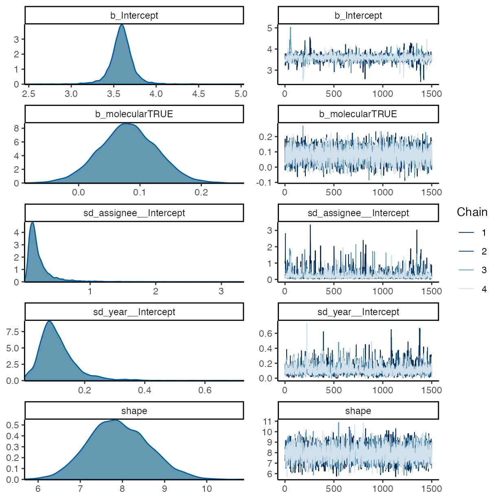
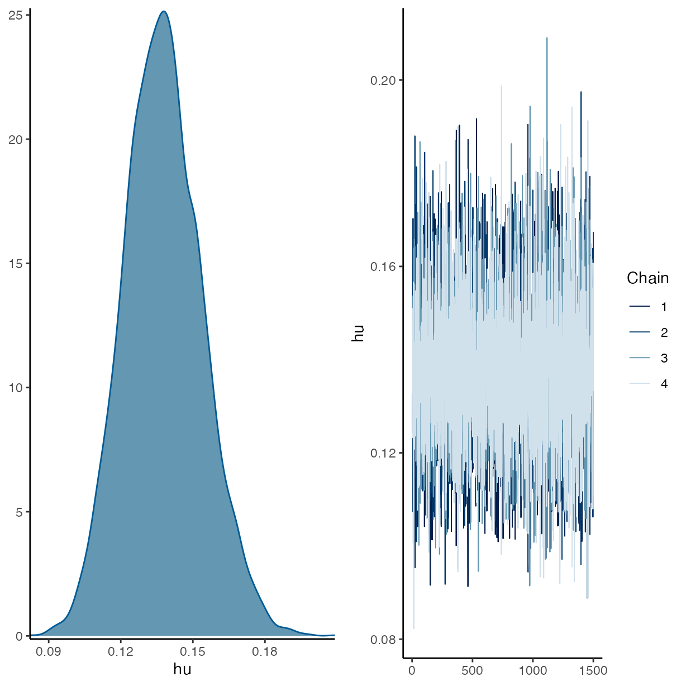
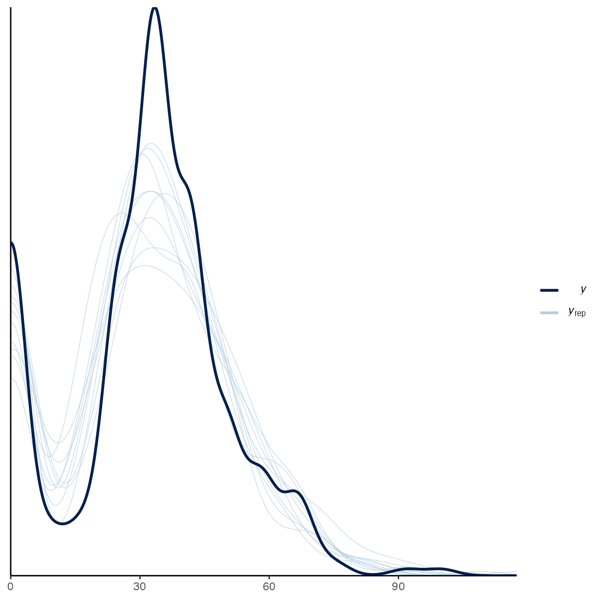
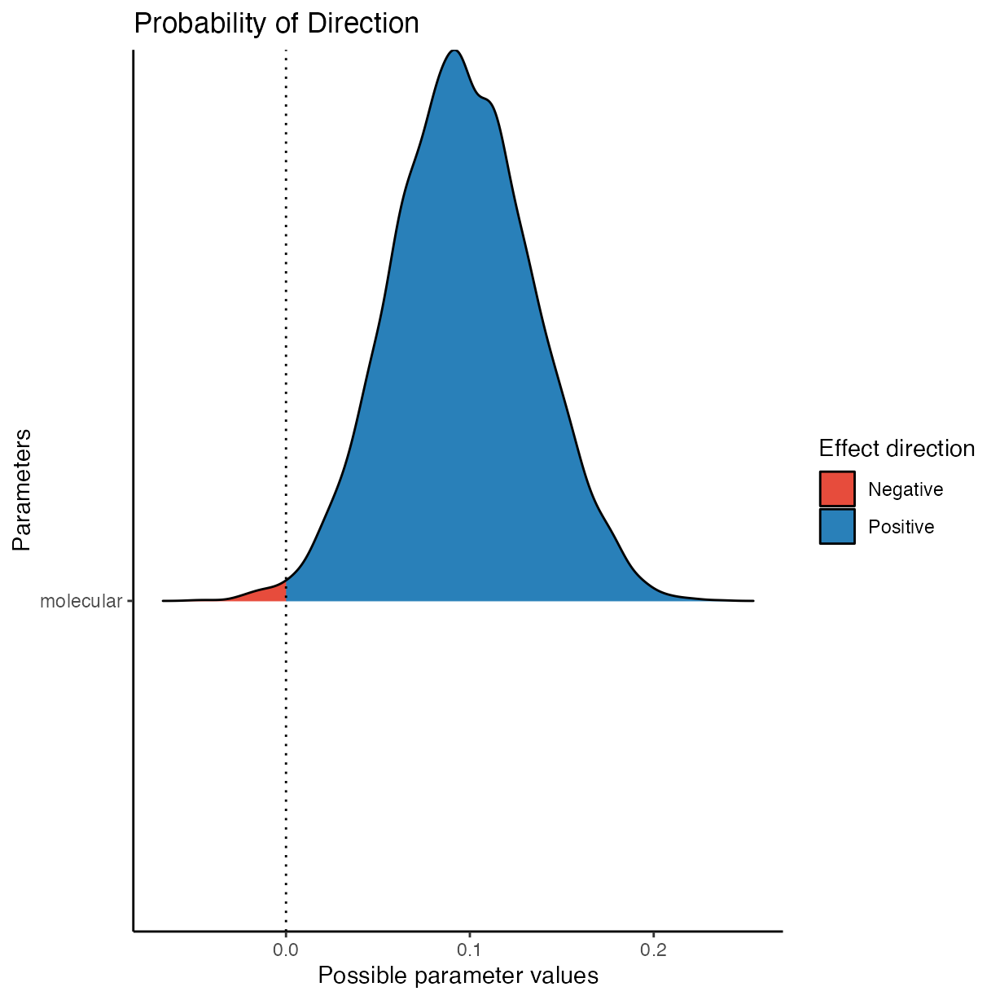

vignettes/g_analysis_mol_focus.Rmd
g_analysis_mol_focus.RmdThis vignette documents a simple visualisation and tabulation of the data gathered from surveying 21 journals and 450 articles in the field of plant pathology for their openness and reproducibility.
Load libraries used and setting the ggplot2 theme for the document.
library("brms")
library("bayestestR")
library("bayesplot")
library("ggplot2")
library("here")
library("pander")
library("Reproducibility.in.Plant.Pathology")
options(mc.cores = parallel::detectCores())
theme_set(theme_classic())Data are imported and the base level is set to Molecular Plant Pathology, the journal with the highest five-year impact factor that will be used as the intercept in the following models.
rrpp <- import_notes()All models are using the same priors. Because of the amount of zero
values in the reproducibility_score a
hurdle_gamma() family is used for all models as well.
Test the effect that the article’s focus, molecular
TRUE/FALSE had on the reproducibility score.
Here, molecular is a fixed effect, year and
assignee are assigned as random effects.
m3 <-
brm(
formula = reproducibility_score ~ molecular + (1 | year) + (1 | assignee),
data = rrpp,
seed = 25,
prior = priors,
family = hurdle_gamma(),
control = list(adapt_delta = 0.999,
max_treedepth = 15),
iter = 3000,
chains = 4
)
#> Warning: Rows containing NAs were excluded from the model.
#> Compiling Stan program...
#> Start sampling
summary(m3)
#> Family: hurdle_gamma
#> Links: mu = log; shape = identity; hu = identity
#> Formula: reproducibility_score ~ molecular + (1 | year) + (1 | assignee)
#> Data: rrpp (Number of observations: 449)
#> Draws: 4 chains, each with iter = 3000; warmup = 1500; thin = 1;
#> total post-warmup draws = 6000
#>
#> Group-Level Effects:
#> ~assignee (Number of levels: 5)
#> Estimate Est.Error l-95% CI u-95% CI Rhat Bulk_ESS Tail_ESS
#> sd(Intercept) 0.17 0.11 0.06 0.45 1.00 1835 2919
#>
#> ~year (Number of levels: 10)
#> Estimate Est.Error l-95% CI u-95% CI Rhat Bulk_ESS Tail_ESS
#> sd(Intercept) 0.07 0.04 0.01 0.15 1.00 1669 2014
#>
#> Population-Level Effects:
#> Estimate Est.Error l-95% CI u-95% CI Rhat Bulk_ESS Tail_ESS
#> Intercept 3.55 0.10 3.37 3.74 1.00 2088 2518
#> molecular 0.10 0.04 0.02 0.17 1.00 6660 3929
#>
#> Family Specific Parameters:
#> Estimate Est.Error l-95% CI u-95% CI Rhat Bulk_ESS Tail_ESS
#> shape 7.76 0.56 6.70 8.89 1.00 6480 3946
#> hu 0.14 0.02 0.11 0.17 1.00 6948 3785
#>
#> Draws were sampled using sampling(NUTS). For each parameter, Bulk_ESS
#> and Tail_ESS are effective sample size measures, and Rhat is the potential
#> scale reduction factor on split chains (at convergence, Rhat = 1).
plot(m3)
pp_check(m3)
#> Using 10 posterior draws for ppc type 'dens_overlay' by default.

pander(equivalence_test(m3))
#> Warning: Could not estimate a good default ROPE range. Using 'c(-0.1, 0.1)'.| Parameter | CI | ROPE_low | ROPE_high | ROPE_Percentage | ROPE_Equivalence |
|---|---|---|---|---|---|
| b_Intercept | 0.95 | -0.1 | 0.1 | 0 | Rejected |
| b_molecular | 0.95 | -0.1 | 0.1 | 0.552 | Undecided |
| HDI_low | HDI_high | Effects | Component |
|---|---|---|---|
| 3.365 | 3.738 | fixed | conditional |
| 0.02337 | 0.1727 | fixed | conditional |
sessioninfo::session_info()
#> ─ Session info ───────────────────────────────────────────────────────────────
#> setting value
#> version R version 4.2.0 (2022-04-22)
#> os macOS Monterey 12.3.1
#> system aarch64, darwin20
#> ui X11
#> language en
#> collate en_AU.UTF-8
#> ctype en_AU.UTF-8
#> tz Australia/Perth
#> date 2022-04-24
#> pandoc 2.17.1.1 @ /Applications/RStudio.app/Contents/MacOS/quarto/bin/ (via rmarkdown)
#>
#> ─ Packages ───────────────────────────────────────────────────────────────────
#> package * version date (UTC) lib source
#> abind 1.4-5 2016-07-21 [2] CRAN (R 4.2.0)
#> assertthat 0.2.1 2019-03-21 [2] CRAN (R 4.2.0)
#> backports 1.4.1 2021-12-13 [2] CRAN (R 4.2.0)
#> base64enc 0.1-3 2015-07-28 [2] CRAN (R 4.2.0)
#> bayesplot * 1.9.0 2022-03-10 [2] CRAN (R 4.2.0)
#> bayestestR * 0.11.5 2021-10-30 [2] CRAN (R 4.2.0)
#> bridgesampling 1.1-2 2021-04-16 [2] CRAN (R 4.2.0)
#> brms * 2.17.0 2022-04-13 [2] CRAN (R 4.2.0)
#> Brobdingnag 1.2-7 2022-02-03 [2] CRAN (R 4.2.0)
#> bslib 0.3.1 2021-10-06 [2] CRAN (R 4.2.0)
#> cachem 1.0.6 2021-08-19 [2] CRAN (R 4.2.0)
#> callr 3.7.0 2021-04-20 [2] CRAN (R 4.2.0)
#> checkmate 2.1.0 2022-04-21 [2] CRAN (R 4.2.0)
#> cli 3.2.0 2022-02-14 [2] CRAN (R 4.2.0)
#> coda 0.19-4 2020-09-30 [2] CRAN (R 4.2.0)
#> codetools 0.2-18 2020-11-04 [2] CRAN (R 4.2.0)
#> colorspace 2.0-3 2022-02-21 [2] CRAN (R 4.2.0)
#> colourpicker 1.1.1 2021-10-04 [2] CRAN (R 4.2.0)
#> crayon 1.5.1 2022-03-26 [2] CRAN (R 4.2.0)
#> crosstalk 1.2.0 2021-11-04 [2] CRAN (R 4.2.0)
#> datawizard 0.4.0 2022-03-30 [2] CRAN (R 4.2.0)
#> DBI 1.1.2 2021-12-20 [2] CRAN (R 4.2.0)
#> desc 1.4.1 2022-03-06 [2] CRAN (R 4.2.0)
#> digest 0.6.29 2021-12-01 [2] CRAN (R 4.2.0)
#> distributional 0.3.0 2022-01-05 [2] CRAN (R 4.2.0)
#> dplyr 1.0.8 2022-02-08 [2] CRAN (R 4.2.0)
#> DT 0.22 2022-03-28 [2] CRAN (R 4.2.0)
#> dygraphs 1.1.1.6 2018-07-11 [2] CRAN (R 4.2.0)
#> ellipsis 0.3.2 2021-04-29 [2] CRAN (R 4.2.0)
#> evaluate 0.15 2022-02-18 [2] CRAN (R 4.2.0)
#> fansi 1.0.3 2022-03-24 [2] CRAN (R 4.2.0)
#> farver 2.1.0 2021-02-28 [2] CRAN (R 4.2.0)
#> fastmap 1.1.0 2021-01-25 [2] CRAN (R 4.2.0)
#> fs 1.5.2 2021-12-08 [2] CRAN (R 4.2.0)
#> generics 0.1.2 2022-01-31 [2] CRAN (R 4.2.0)
#> ggplot2 * 3.3.5 2021-06-25 [2] CRAN (R 4.2.0)
#> ggridges 0.5.3 2021-01-08 [2] CRAN (R 4.2.0)
#> glue 1.6.2 2022-02-24 [2] CRAN (R 4.2.0)
#> gridExtra 2.3 2017-09-09 [2] CRAN (R 4.2.0)
#> gtable 0.3.0 2019-03-25 [2] CRAN (R 4.2.0)
#> gtools 3.9.2 2021-06-06 [2] CRAN (R 4.2.0)
#> here * 1.0.1 2020-12-13 [2] CRAN (R 4.2.0)
#> highr 0.9 2021-04-16 [2] CRAN (R 4.2.0)
#> hms 1.1.1 2021-09-26 [2] CRAN (R 4.2.0)
#> htmltools 0.5.2 2021-08-25 [2] CRAN (R 4.2.0)
#> htmlwidgets 1.5.4 2021-09-08 [2] CRAN (R 4.2.0)
#> httpuv 1.6.5 2022-01-05 [2] CRAN (R 4.2.0)
#> igraph 1.3.1 2022-04-20 [2] CRAN (R 4.2.0)
#> inline 0.3.19 2021-05-31 [2] CRAN (R 4.2.0)
#> insight 0.17.0 2022-03-29 [2] CRAN (R 4.2.0)
#> jquerylib 0.1.4 2021-04-26 [2] CRAN (R 4.2.0)
#> jsonlite 1.8.0 2022-02-22 [2] CRAN (R 4.2.0)
#> knitr 1.38 2022-03-25 [2] CRAN (R 4.2.0)
#> labeling 0.4.2 2020-10-20 [2] CRAN (R 4.2.0)
#> later 1.3.0 2021-08-18 [2] CRAN (R 4.2.0)
#> lattice 0.20-45 2021-09-22 [2] CRAN (R 4.2.0)
#> lifecycle 1.0.1 2021-09-24 [2] CRAN (R 4.2.0)
#> loo 2.5.1 2022-03-24 [2] CRAN (R 4.2.0)
#> magrittr 2.0.3 2022-03-30 [2] CRAN (R 4.2.0)
#> markdown 1.1 2019-08-07 [2] CRAN (R 4.2.0)
#> Matrix 1.4-1 2022-03-23 [2] CRAN (R 4.2.0)
#> matrixStats 0.62.0 2022-04-19 [2] CRAN (R 4.2.0)
#> memoise 2.0.1 2021-11-26 [2] CRAN (R 4.2.0)
#> mime 0.12 2021-09-28 [2] CRAN (R 4.2.0)
#> miniUI 0.1.1.1 2018-05-18 [2] CRAN (R 4.2.0)
#> munsell 0.5.0 2018-06-12 [2] CRAN (R 4.2.0)
#> mvtnorm 1.1-3 2021-10-08 [2] CRAN (R 4.2.0)
#> nlme 3.1-157 2022-03-25 [2] CRAN (R 4.2.0)
#> pander * 0.6.5 2022-03-18 [2] CRAN (R 4.2.0)
#> pillar 1.7.0 2022-02-01 [2] CRAN (R 4.2.0)
#> pkgbuild 1.3.1 2021-12-20 [2] CRAN (R 4.2.0)
#> pkgconfig 2.0.3 2019-09-22 [2] CRAN (R 4.2.0)
#> pkgdown 2.0.2 2022-01-13 [2] CRAN (R 4.2.0)
#> plyr 1.8.7 2022-03-24 [2] CRAN (R 4.2.0)
#> posterior 1.2.1 2022-03-07 [2] CRAN (R 4.2.0)
#> prettyunits 1.1.1 2020-01-24 [2] CRAN (R 4.2.0)
#> processx 3.5.3 2022-03-25 [2] CRAN (R 4.2.0)
#> promises 1.2.0.1 2021-02-11 [2] CRAN (R 4.2.0)
#> ps 1.7.0 2022-04-23 [2] CRAN (R 4.2.0)
#> purrr 0.3.4 2020-04-17 [2] CRAN (R 4.2.0)
#> R6 2.5.1 2021-08-19 [2] CRAN (R 4.2.0)
#> ragg 1.2.2 2022-02-21 [2] CRAN (R 4.2.0)
#> Rcpp * 1.0.8.3 2022-03-17 [2] CRAN (R 4.2.0)
#> RcppParallel 5.1.5 2022-01-05 [2] CRAN (R 4.2.0)
#> readODS 1.7.0 2020-07-10 [2] CRAN (R 4.2.0)
#> readr 2.1.2 2022-01-30 [2] CRAN (R 4.2.0)
#> Reproducibility.in.Plant.Pathology * 0.0.6 2022-04-24 [1] local
#> reshape2 1.4.4 2020-04-09 [2] CRAN (R 4.2.0)
#> rlang 1.0.2 2022-03-04 [2] CRAN (R 4.2.0)
#> rmarkdown 2.13 2022-03-10 [2] CRAN (R 4.2.0)
#> rprojroot 2.0.3 2022-04-02 [2] CRAN (R 4.2.0)
#> rstan 2.21.5 2022-04-11 [2] CRAN (R 4.2.0)
#> rstantools 2.2.0 2022-04-08 [2] CRAN (R 4.2.0)
#> rstudioapi 0.13 2020-11-12 [2] CRAN (R 4.2.0)
#> sass 0.4.1.9000 2022-04-24 [2] https://gadenbuie.r-universe.dev (R 4.2.0)
#> scales 1.2.0 2022-04-13 [2] CRAN (R 4.2.0)
#> see 0.7.0 2022-03-31 [2] CRAN (R 4.2.0)
#> sessioninfo 1.2.2 2021-12-06 [2] CRAN (R 4.2.0)
#> shiny 1.7.1 2021-10-02 [2] CRAN (R 4.2.0)
#> shinyjs 2.1.0 2021-12-23 [2] CRAN (R 4.2.0)
#> shinystan 2.6.0 2022-03-03 [2] CRAN (R 4.2.0)
#> shinythemes 1.2.0 2021-01-25 [2] CRAN (R 4.2.0)
#> StanHeaders 2.21.0-7 2020-12-17 [2] CRAN (R 4.2.0)
#> stringi 1.7.6 2021-11-29 [2] CRAN (R 4.2.0)
#> stringr 1.4.0 2019-02-10 [2] CRAN (R 4.2.0)
#> systemfonts 1.0.4 2022-02-11 [2] CRAN (R 4.2.0)
#> tensorA 0.36.2 2020-11-19 [2] CRAN (R 4.2.0)
#> textshaping 0.3.6 2021-10-13 [2] CRAN (R 4.2.0)
#> threejs 0.3.3 2020-01-21 [2] CRAN (R 4.2.0)
#> tibble 3.1.6 2021-11-07 [2] CRAN (R 4.2.0)
#> tidyselect 1.1.2 2022-02-21 [2] CRAN (R 4.2.0)
#> tzdb 0.3.0 2022-03-28 [2] CRAN (R 4.2.0)
#> utf8 1.2.2 2021-07-24 [2] CRAN (R 4.2.0)
#> vctrs 0.4.1 2022-04-13 [2] CRAN (R 4.2.0)
#> withr 2.5.0 2022-03-03 [2] CRAN (R 4.2.0)
#> xfun 0.30 2022-03-02 [2] CRAN (R 4.2.0)
#> xml2 1.3.3 2021-11-30 [2] CRAN (R 4.2.0)
#> xtable 1.8-4 2019-04-21 [2] CRAN (R 4.2.0)
#> xts 0.12.1 2020-09-09 [2] CRAN (R 4.2.0)
#> yaml 2.3.5 2022-02-21 [2] CRAN (R 4.2.0)
#> zoo 1.8-10 2022-04-15 [2] CRAN (R 4.2.0)
#>
#> [1] /private/var/folders/tr/fwv720l96bz2btcr0jr_gs840000gn/T/RtmpnxUI9e/temp_libpath4a32aba7444
#> [2] /Library/Frameworks/R.framework/Versions/4.2-arm64/Resources/library
#>
#> ──────────────────────────────────────────────────────────────────────────────